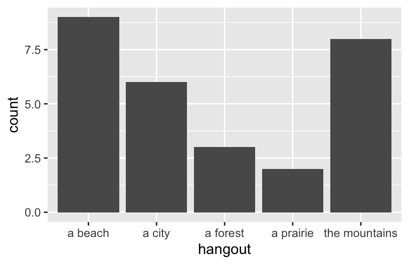
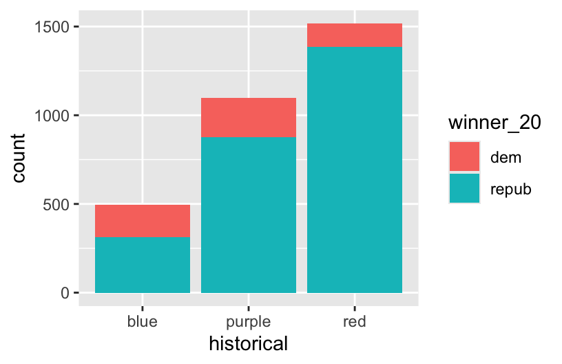

Use this file for practice with the bivariate viz in-class activity. Refer to the class website for details.
# Import datasurvey <-read.csv("https://ajohns24.github.io/data/112/about_us_2024.csv")# How many students have now filled out the survey?nrow(survey)
[1] 28
# What type of variables do we have?#Both categorical variables and quantitative variablesstr(survey)
'data.frame': 28 obs. of 4 variables:
$ cafe_mac : chr "Cheesecake" "Cheese pizza" "udon noodles" "egg rolls" ...
$ minutes_to_campus: int 15 10 4 7 5 35 5 15 7 20 ...
$ fave_temp : num 18 24 18 10 18 7 75 24 13 16 ...
$ hangout : chr "the mountains" "a beach" "the mountains" "a beach" ...
12.1 Review
Let’s review some univariate concepts and code using our class survey data. If the answers aren’t at the top of your mind, don’t fret! We’ve barely started speaking this new language, and learned a ton of vocab last week, so you naturally won’t remember it all.
# Import datasurvey <-read.csv("https://ajohns24.github.io/data/112/about_us_2024.csv")# How many students have now filled out the survey?nrow(survey)
[1] 28
# What type of variables do we have?#Both categorical variables and quantitative variablesstr(survey)
'data.frame': 28 obs. of 4 variables:
$ cafe_mac : chr "Cheesecake" "Cheese pizza" "udon noodles" "egg rolls" ...
$ minutes_to_campus: int 15 10 4 7 5 35 5 15 7 20 ...
$ fave_temp : num 18 24 18 10 18 7 75 24 13 16 ...
$ hangout : chr "the mountains" "a beach" "the mountains" "a beach" ...
EXAMPLE 1: Hangout Preferences
Students were asked, in that moment, where they’d most like to spend time outside. How did they answer? Was there a lot of agreement or a lot of variability in answers? Build and interpret a plot that helps address these questions while reviewing:
“code as communication”
connecting with the components of a plot:
set up a frame
add a layer / geometric element
change the theme, e.g. axis labels, color, fill
# Attach a package needed to use the ggplot functionlibrary(tidyverse)# Make a ggplotggplot(survey, aes(x=hangout))+geom_bar()

EXAMPLE 2: Temperature Preferences
Students were asked about their ideal outdoor temperature, in degrees Celsius. How did they answer? What was the typical response? What was the range in responses? Were there any outliers? Build and interpret 2 plots that help address these questions.
Bar charts & histograms can appear pretty similar, but they do different things.
Bar charts count up the number of observations of each outcome of a variable. They’re good for categorical variables, or quantitative variables with only a handful of possible outcomes.
Histograms count up the number of observations that fall into different numerical ranges of variable. They’re good for quantitative variables, especially those with many different observed outcomes.
12.2 New stuff
Thus far, we’ve been studying one variable at a time, using univariate plots. But once we get a sense of how individual variables behave on their own, our questions often turn to relationships among variables. For example, in our hikes data:
How much time does it take to complete a hike? ——> How is time related to a hike’s elevation? What about its length?
How does difficult rating vary from hike to hike? ——-> How is difficulty rating related to a hike’s ascent?
12.2.1 Exploring relationships
Exploring univariate patterns often sparks follow-up questions about relationships between 2+ variables. Often, but not always, variables take on specific roles:
response variable: the variable whose variability we would like to explain (time to complete a hike)
predictors: variables that might explain some of the variability in the response (a hike’s elevation or length)
Visualizations can help explore:
relationship trends (direction and form)
relationship strength (degree of variability from the trend)
outliers in the relationship
EXAMPLE 3
For each pair of variables below, sketch on paper a visualization of their relationship. Focus on general viz process, don’t worry about the exact details. The data here are totally made up.
3pm temperature (response) vs 9am temperature (predictor)
rain_today location
1 no A
2 no A
3 no A
4 no A
5 yes A
6 no A
7 yes A
8 no B
9 yes B
10 yes B
11 no B
12 yes B
Think: How might we modify the below bar plot of location to distinguish between days on which it did or didn’t rain?
ggplot(weather, aes(x = location)) +geom_bar()
12.2.2 General guidance for building bivariate plots
As with univariate plots, an appropriate visualization for the relationship between 2 variables depends upon whether the variables are quantitative or categorical. In general:
Each quantitative variable requires a new axis (or a quantitative scale if we run out of axes).
Each categorical variable requires a new way to “group” the graphic (eg: using colors, shapes, separate facets, etc)
For visualizations in which overlap in glyphs or plots obscures the patterns, try faceting or transparency.
12.3 Exercises (required)
Github user Tony McGovern has compiled and made available 2020/2016/2012 presidential election results for most of 3000+ U.S. counties, except Alaska. (Image: Wikimedia Commons)
A wrangled version of this data, is imported below, after being combined with:
2013 county-level demographics from the df_county_demographics data set from the choroplethr R package
Exercise 1: Quantitative vs Quantitative Intuition Check
Below is a scatterplot of the Republican support in 2020 vs 2016. Notice that:
both variables are quantitative, and get their own axes
the response variable is on the y-axis, demonstrating how repub_pct_20 might be predicted by repub_pct_16, not vice versa
Try to replicate this using ggplot(). THINK:
What info do you need to set up the canvas?
What geometric layer (geom_???) might add these dots / points for each county? We haven’t learned this yet, just take some guesses.
Exercise 2: 2 Quantitiative Variables
Run each chunk below to build up a a scatterplot of repub_pct_20 vs repub_pct_16 with different glyphs representing each county. Address or think about any prompts in the comments (#).
# Set up the plotting frame# How does this differ than the frame for our histogram of repub_pct_20 alone?#There are two variablesggplot(elections, aes(y = repub_pct_20, x = repub_pct_16))
# Add a layer of points for each county# Take note of the geom! geom_poitggplot(elections, aes(y = repub_pct_20, x = repub_pct_16)) +geom_point()
# Change the shape of the points# What happens if you change the shape to another number?#It changes from a spot to a crossggplot(elections, aes(y = repub_pct_20, x = repub_pct_16)) +geom_point(shape =3)
# YOU TRY: Modify the code to make the points "orange"# NOTE: Try to anticipate if "color" or "fill" will be useful here. Then try both.ggplot(elections, aes(y = repub_pct_20, x = repub_pct_16)) +geom_point(color="orange")
# Add a layer that represents each county by the state it's in# Take note of the geom and the info it needs to run!ggplot(elections, aes(y = repub_pct_20, x = repub_pct_16)) +geom_text(aes(label = state_abbr))
Exercise 3: Reflect
Summarize the relationship between the Republican support in 2020 and 2016. Be sure to comment on:
the strength of the relationship (weak/moderate/strong)
the direction of the relationship (positive/negative)
outliers (in what state do counties deviate from the national trend? Any ideas why this might be the case?) There is a strong positive relation.
Exercise 4: Visualizing trend
The trend of the relationship between repub_pct_20 and repub_pct_16 is clearly positive and (mostly) linear. We can highlight this trend by adding a model “smooth” to the plot:
ggplot(elections, aes(y = repub_pct_20, x = repub_pct_16)) +geom_point() +geom_smooth()
Part a
Construct a new plot that contains the model smooth but does not include the individual point glyphs.
ggplot(elections, aes(y = repub_pct_20, x = repub_pct_16)) +geom_smooth()
Part b
By default, geom_smooth() adds a smooth, localized model line. To examine the “best” linear model, we can specify method = "lm". It’s pretty similar in this example!
ggplot(elections, aes(y = repub_pct_20, x = repub_pct_16)) +geom_point() +geom_smooth(method ="lm")
Exercise 5: Your Turn
To examine how the 2020 results are related to some county demographics, construct scatterplots of repub_pct_20 vs median_rent, and repub_pct_20 vs median_age. Summarize the relationship between these two variables and comment on which is the better predictor of repub_pct_20, median_rent or median_age.
# Scatterplot of repub_pct_20 vs median_rentggplot(elections, aes(y = repub_pct_20, x = median_rent)) +geom_point()
# Scatterplot of repub_pct_20 vs median_age# Scatterplot of repub_pct_20 vs median_ageggplot(elections, aes(y = repub_pct_20, x = median_age)) +geom_point()
Exercise 6: A Sad Scatterplot
Next, let’s explore the relationship between a county’s 2020 Republican support repub_pct_20 and the historical political trends in its state. In this case repub_pct_20 is quantitative, but historical is categorical. Explain why a scatterplot might not be an effective visualization for exploring this relationship. (What questions does / doesn’t it help answer?)
ggplot(elections, aes(y = repub_pct_20, x = historical)) +geom_point()
Exercise 7: Quantitative vs Categorical – Violins & Boxes
Though the above scatterplot did group the counties by historical category, it’s nearly impossible to pick out meaningful patterns in 2020 Republican support in each category. Let’s try adding 2 different geom layers to the frame:
Box plots are constructed from five numbers - the minimum, 25th percentile, median, 75th percentile, and maximum value of a quantitative variable:
REFLECT:
Summarize what you’ve learned about the 2020 Republican county-level support within and between red/purple/blue states.
Exercise 8: Quantitative vs Categorical – Intuition Check
Be Quick
Don’t spend more than 3 minutes on this!
We can also visualize the relationship between repub_pct_20 and historical using our familiar density plots. In the plot below, notice that we simply created a separate density plot for each historical category. (The plot itself is “bad” but we’ll fix it below.) Try to adjust the code chunk below, which starts with a density plot of repub_pct_20 alone, to re-create this image.
Exercise 9: Quantitative vs Categorical – Density Plots
Work through the chunks below and address the comments therein.
# Name two "bad" things about this plot# The color does not much and the density plot does not show each completelyggplot(elections, aes(x = repub_pct_20, fill = historical)) +geom_density()
# What does scale_fill_manual do?#match the colorggplot(elections, aes(x = repub_pct_20, fill = historical)) +geom_density() +scale_fill_manual(values =c("blue", "purple", "red"))
# What does alpha = 0.5 do?#It makes the plot transparent# Play around with different values of alpha, between 0 and 1ggplot(elections, aes(x = repub_pct_20, fill = historical)) +geom_density(alpha =0.5) +scale_fill_manual(values =c("blue", "purple", "red"))
# It separates each plots by color based on historicalggplot(elections, aes(x = repub_pct_20, fill = historical)) +geom_density() +scale_fill_manual(values =c("blue", "purple", "red")) +facet_wrap(~ historical)
# Let's try a similar grouping strategy with a histogram instead of density plot.# Why is this terrible?#the meaning of the plot changes, becuase it shows a different data for historicalggplot(elections, aes(x = repub_pct_20, fill = historical)) +geom_histogram(color ="white") +scale_fill_manual(values =c("blue", "purple", "red"))
Exercise 10
We’ve now learned 3 (of many) ways to visualize the relationship between a quantitative and categorical variable: side-by-side violins, boxplots, and density plots.
Which do you like best? density
What is one pro of density plots relative to boxplots? Density plot show the total number of data, while the box plot only shows five datas.
What is one con of density plots relative to boxplots? Box plot can be more easier to read,
Exercise 11: Categorical vs Categorical – Intuition Check
Finally, let’s simply explore who won each county in 2020 (winner_20) and how this breaks down by historical voting trends in the state. That is, let’s explore the relationship between 2 categorical variables! Following the same themes as above, we can utilize grouping features such as fill/color or facets to distinguish between different categories of winner_20 and historical.
Be Quick
Spend at most 5 minutes on the following intuition check. Adjust the code below to recreate the following two plots.
# Plot 1: adjust this to recreate the top plotggplot(elections, aes(x = historical, fill=winner_20)) +geom_bar()

# Plot 2: adjust this to recreate the bottom plotggplot(elections, aes(x = winner_20)) +geom_bar()+facet_wrap(~historical)
Exercise 12: Categorical vs Categorical
Construct the following 4 bar plot visualizations.
# A stacked bar plot# How are the "historical" and "winner_20" variables mapped to the plot, i.e. what roles do they play?#historical is the x axis, and the winner fills in the plotggplot(elections, aes(x = historical, fill = winner_20)) +geom_bar()
# A faceted bar plotggplot(elections, aes(x = winner_20)) +geom_bar() +facet_wrap(~ historical)
# A side-by-side bar plot# Note the new argument to geom_barggplot(elections, aes(x = historical, fill = winner_20)) +geom_bar(position ="dodge")
# A proportional bar plot# Note the new argument to geom_barggplot(elections, aes(x = historical, fill = winner_20)) +geom_bar(position ="fill")
Part a
Name one pro and one con of using the “proportional bar plot” instead of one of the other three options. It is easier to compare the data, and it has more variables.
Part b
What’s your favorite bar plot from part and why? I prefer the third one, becuase it shows clearly the difference of number of winners historical.
Exercise 13: Practice (now or later)
Decide
Decide what’s best for you:
Try this extra practice now.
Reflect on the above exercises and come back to this extra practice later (but before the next class).
Import some daily weather data from a few locations in Australia:
Construct plots that address the research questions in each chunk. You might make multiple plots–there are many ways to do things!. However, don’t just throw spaghetti at the wall.
Reflect before doing anything. What types of variables are these? How might you plot just 1 of the variables, and then tweak the plot to incorporate the other?
# How do 3pm temperatures (temp3pm) differ by location?ggplot(weather, aes(x = temp3pm, fill = location)) +geom_density(alpha =0.5)
# How might we predict the 3pm temperature (temp3pm) by the 9am temperature (temp9am)?ggplot(weather, aes(y = temp3pm, x = temp9am)) +geom_point()
# How do the number of rainy days (raintoday) differ by location?ggplot(weather, aes(x = location, fill = raintoday)) +geom_bar()
Source Code
---title: "Bivariate Viz"---Use this file for practice with the **bivariate viz** in-class activity. Refer to the class website for details.```{r}# Import datasurvey <-read.csv("https://ajohns24.github.io/data/112/about_us_2024.csv")# How many students have now filled out the survey?nrow(survey)# What type of variables do we have?#Both categorical variables and quantitative variablesstr(survey)```---title: "Bivariate Viz"number-sections: trueexecute: warning: falsefig-height: 2.75fig-width: 4.25fig-env: 'figure'fig-pos: 'h'fig-align: centercode-fold: false---## ReviewLet's review some *univariate* concepts and code using our class survey data. If the answers aren't at the top of your mind, don't fret! We've barely started speaking this new language, and learned a ton of vocab last week, so you naturally won't remember it all.```{r}# Import datasurvey <-read.csv("https://ajohns24.github.io/data/112/about_us_2024.csv")# How many students have now filled out the survey?nrow(survey)# What type of variables do we have?#Both categorical variables and quantitative variablesstr(survey)```### EXAMPLE 1: Hangout Preferences {-}Students were asked, in that moment, where they'd most like to spend time outside. How did they answer? Was there a lot of agreement or a lot of variability in answers? Build and interpret a plot that helps address these questions while reviewing:- "code as communication"- connecting with the components of a plot: - set up a **frame** - add a **layer** / geometric element - change the **theme**, e.g. axis labels, color, fill```{r}# Attach a package needed to use the ggplot functionlibrary(tidyverse)# Make a ggplotggplot(survey, aes(x=hangout))+geom_bar()```### EXAMPLE 2: Temperature Preferences {-}Students were asked about their ideal outdoor temperature, in degrees Celsius. How did they answer? What was the typical response? What was the range in responses? Were there any outliers? Build and interpret 2 plots that help address these questions.```{r}ggplot(survey, aes(x = fave_temp)) +geom_histogram(color ="white", binwidth =5)ggplot(survey, aes(x = fave_temp)) +geom_density()```::: {.callout-note title="Bar Charts vs. Histograms"}Bar charts & histograms can appear pretty similar, but they do different things.- **Bar charts** count up the number of observations of each outcome of a variable. They're good for *categorical* variables, or *quantitative* variables with only a handful of possible outcomes.- **Histograms** count up the number of observations that fall into different numerical *ranges* of variable. They're good for *quantitative* variables, especially those with many different observed outcomes.:::## New stuffThus far, we've been studying one variable at a time, using *univariate* plots. But once we get a sense of how individual variables behave on their own, our questions often turn to *relationships* among variables. For example, in our `hikes` data:- How much `time` does it take to complete a hike? ------\> How is `time` related to a hike's `elevation`? What about its `length`?- How does difficult `rating` vary from hike to hike? -------\> How is difficulty `rating` related to a hike's `ascent`?### Exploring relationshipsExploring univariate patterns often sparks follow-up questions about **relationships** between 2+ variables. Often, but not always, variables take on specific roles:- **response variable**: the variable whose variability we would like to explain (`time` to complete a hike)- **predictors**: variables that might explain some of the variability in the response (a hike's `elevation` or `length`)Visualizations can help explore:- relationship *trends* (direction and form)- relationship *strength* (degree of variability from the trend)- *outliers* in the relationship#### EXAMPLE 3 {-}For each pair of variables below, sketch on paper a visualization of their relationship. Focus on general viz process, don't worry about the exact details. The data here are totally made up. a. 3pm temperature (response) vs 9am temperature (predictor)```{r}data.frame(temp_3pm =c(24, 26, 20, 15, 15, 15), temp_9am =c(14, 18, 15, 13, 11, 11))``` b. 3pm temperature (response) vs location (predictor)```{r}weather <-data.frame(temp_3pm =c(24, 26, 20, 15, 15, 0, 40, 60, 57, 44, 51, 75),location =rep(c("A", "B"), each =6))weather```Think: How might we modify the below density plot of `temp_3pm` to distinguish between locations?```{r}ggplot(weather, aes(x = temp_3pm)) +geom_density()```c. `rain_today` (the response) and `location` (the predictor)```{r}weather <-data.frame(rain_today =c("no", "no", "no", "no", "yes", "no", "yes", "no", "yes", "yes", "no", "yes"),location =c(rep("A", 7), rep("B", 5))) weather```Think: How might we modify the below bar plot of `location` to distinguish between days on which it did or didn't rain?```{r}ggplot(weather, aes(x = location)) +geom_bar()```### General guidance for building bivariate plotsAs with univariate plots, an appropriate visualization for the relationship between 2 variables depends upon whether the variables are **quantitative** or **categorical**. In general:- Each **quantitative variable** requires a new *axis* (or a quantitative *scale* if we run out of axes).- Each **categorical variable** requires a new way to "group" the graphic (eg: using colors, shapes, separate facets, etc)- For visualizations in which **overlap** in glyphs or plots obscures the patterns, try faceting or transparency.## Exercises (required)[Github user Tony McGovern](https://github.com/tonmcg/US_County_Level_Election_Results_08-20) has compiled and made available 2020/2016/2012 presidential election results for most of 3000+ U.S. counties, except Alaska. (Image: [Wikimedia Commons](https://commons.wikimedia.org/wiki/File:Map_of_USA_with_county_outlines_(black_%26_white).png))A wrangled version of this data, is imported below, after being combined with:- 2013 county-level demographics from the `df_county_demographics` data set from the `choroplethr` R package- historical voting trends in the state in which the county falls (from <https://www.270towin.com/content/blue-and-red-states>): - red = consistently Republican - blue = consistently Democratic - purple = something in between```{r}# Load dataelections <-read.csv("https://mac-stat.github.io/data/election_2020_county.csv")# Check it outhead(elections)```We'll use this data to explore voting outcomes within the U.S.'s 2-party system. Here's a list of candidates by year:| year | Republican candidate | Democratic candidate ||:-----|:---------------------|:---------------------|| 2020 | Donald Trump | Joe Biden || 2016 | Donald Trump | Hillary Clinton || 2012 | Mitt Romney | Barack Obama |### Exercise 0: Review {.unnumbered}#### Part a {.unnumbered}How many, or roughly what percent, of the 3000+ counties did the Republican candidate win in 2020?- Take a guess.- Then make a plot of the `winner` variable.- Then discuss what follow-up questions you might have (and that our data might help us answer).```{r}ggplot(elections,aes(x=winner_16)) +geom_bar()```#### Part b {.unnumbered}The `repub_pct_20` variable provides more detail about the Republican support in each county. Construct a plot of `repub_pct_20`.Notice that the distribution of Republican support from county to county is slightly **left skewed** or **negatively skewed**.What follow-up questions do you have?```{r}ggplot(elections,aes(x=repub_pct_20)) +geom_density()```### Exercise 1: Quantitative vs Quantitative Intuition Check {.unnumbered}Below is a **scatterplot** of the Republican support in 2020 vs 2016. Notice that:- both variables are quantitative, and get their own axes- the *response* variable is on the y-axis, demonstrating how `repub_pct_20` might be predicted by `repub_pct_16`, not vice versaTry to replicate this using `ggplot()`. THINK:- What info do you need to set up the canvas?- What geometric layer (`geom_???`) might add these dots / points for each county? We haven't learned this yet, just take some guesses.{width="50%"}### Exercise 2: 2 Quantitiative Variables {.unnumbered}Run each chunk below to build up a a scatterplot of `repub_pct_20` vs `repub_pct_16` with different *glyphs* representing each county. Address or think about any prompts in the comments (`#`).```{r eval = FALSE}# Set up the plotting frame# How does this differ than the frame for our histogram of repub_pct_20 alone?#There are two variablesggplot(elections, aes(y = repub_pct_20, x = repub_pct_16))``````{r eval = FALSE}# Add a layer of points for each county# Take note of the geom! geom_poitggplot(elections, aes(y = repub_pct_20, x = repub_pct_16)) + geom_point()``````{r eval = FALSE}# Change the shape of the points# What happens if you change the shape to another number?#It changes from a spot to a crossggplot(elections, aes(y = repub_pct_20, x = repub_pct_16)) + geom_point(shape = 3)``````{r}# YOU TRY: Modify the code to make the points "orange"# NOTE: Try to anticipate if "color" or "fill" will be useful here. Then try both.ggplot(elections, aes(y = repub_pct_20, x = repub_pct_16)) +geom_point(color="orange")``````{r eval = FALSE}# Add a layer that represents each county by the state it's in# Take note of the geom and the info it needs to run!ggplot(elections, aes(y = repub_pct_20, x = repub_pct_16)) + geom_text(aes(label = state_abbr))```### Exercise 3: Reflect {.unnumbered}Summarize the relationship between the Republican support in 2020 and 2016. Be sure to comment on:- the strength of the relationship (weak/moderate/strong)\- the direction of the relationship (positive/negative)\- outliers (in what state do counties deviate from the national trend? Any ideas why this might be the case?)There is a strong positive relation.### Exercise 4: Visualizing trend {.unnumbered}The trend of the relationship between `repub_pct_20` and `repub_pct_16` is clearly positive and (mostly) linear. We can highlight this trend by adding a model "smooth" to the plot:```{r eval = FALSE}ggplot(elections, aes(y = repub_pct_20, x = repub_pct_16)) + geom_point() + geom_smooth()```#### Part a {.unnumbered}Construct a new plot that contains the model smooth but does *not* include the individual point glyphs.```{r}ggplot(elections, aes(y = repub_pct_20, x = repub_pct_16)) +geom_smooth()```#### Part b {.unnumbered}By default, `geom_smooth()` adds a smooth, localized model line. To examine the "best" *linear model*, we can specify `method = "lm"`. It's pretty similar in this example!```{r eval = FALSE}ggplot(elections, aes(y = repub_pct_20, x = repub_pct_16)) + geom_point() + geom_smooth(method = "lm")```### Exercise 5: Your Turn {.unnumbered}To examine how the 2020 results are related to some county demographics, construct scatterplots of `repub_pct_20` vs `median_rent`, and `repub_pct_20` vs `median_age`. Summarize the relationship between these two variables and comment on which is the better predictor of `repub_pct_20`, `median_rent` or `median_age`.```{r}# Scatterplot of repub_pct_20 vs median_rentggplot(elections, aes(y = repub_pct_20, x = median_rent)) +geom_point() # Scatterplot of repub_pct_20 vs median_age# Scatterplot of repub_pct_20 vs median_ageggplot(elections, aes(y = repub_pct_20, x = median_age)) +geom_point() ```### Exercise 6: A Sad Scatterplot {.unnumbered}Next, let's explore the relationship between a county's 2020 Republican support `repub_pct_20` and the `historical` political trends in its state. In this case `repub_pct_20` is **quantitative**, but `historical` is **categorical**. Explain why a scatterplot might *not* be an effective visualization for exploring this relationship. (What questions does / doesn't it help answer?)```{r}ggplot(elections, aes(y = repub_pct_20, x = historical)) +geom_point()```### Exercise 7: Quantitative vs Categorical -- Violins & Boxes {.unnumbered}Though the above scatterplot *did* group the counties by `historical` category, it's nearly impossible to pick out meaningful patterns in 2020 Republican support in each category. Let's try adding 2 different `geom` layers to the frame:```{r eval = FALSE}# Side-by-side violin plotsggplot(elections, aes(y = repub_pct_20, x = historical)) + geom_violin()``````{r eval = FALSE}# Side-by-side boxplots (defined below)ggplot(elections, aes(y = repub_pct_20, x = historical)) + geom_boxplot()```Box plots are constructed from five numbers - the minimum, 25th percentile, median, 75th percentile, and maximum value of a quantitative variable:{width="50%"}**REFLECT:**Summarize what you've learned about the 2020 Republican county-level support within and between red/purple/blue states.### Exercise 8: Quantitative vs Categorical -- Intuition Check {.unnumbered}::: {.callout-important title="Be Quick"}Don't spend more than 3 minutes on this! :::We can also visualize the relationship between `repub_pct_20` and `historical` using our familiar density plots. In the plot below, notice that we simply created a separate density plot for each `historical` category. (The plot itself is "bad" but we'll fix it below.) Try to adjust the code chunk below, which starts with a density plot of `repub_pct_20` alone, to re-create this image.{width="50%"}```{r}ggplot(elections, aes(x = repub_pct_20,fill=historical)) +geom_density()```### Exercise 9: Quantitative vs Categorical -- Density Plots {.unnumbered}Work through the chunks below and address the comments therein.```{r eval = FALSE}# Name two "bad" things about this plot# The color does not much and the density plot does not show each completelyggplot(elections, aes(x = repub_pct_20, fill = historical)) + geom_density()``````{r eval = FALSE}# What does scale_fill_manual do?#match the colorggplot(elections, aes(x = repub_pct_20, fill = historical)) + geom_density() + scale_fill_manual(values = c("blue", "purple", "red"))``````{r eval = FALSE}# What does alpha = 0.5 do?#It makes the plot transparent# Play around with different values of alpha, between 0 and 1ggplot(elections, aes(x = repub_pct_20, fill = historical)) + geom_density(alpha = 0.5) + scale_fill_manual(values = c("blue", "purple", "red"))``````{r eval = FALSE}# It separates each plots by color based on historicalggplot(elections, aes(x = repub_pct_20, fill = historical)) + geom_density() + scale_fill_manual(values = c("blue", "purple", "red")) + facet_wrap(~ historical)``````{r eval = FALSE}# Let's try a similar grouping strategy with a histogram instead of density plot.# Why is this terrible?#the meaning of the plot changes, becuase it shows a different data for historicalggplot(elections, aes(x = repub_pct_20, fill = historical)) + geom_histogram(color = "white") + scale_fill_manual(values = c("blue", "purple", "red"))```### Exercise 10 {.unnumbered}We've now learned 3 (of many) ways to visualize the relationship between a quantitative and categorical variable: side-by-side violins, boxplots, and density plots.- Which do you like best?density- What is one pro of density plots relative to boxplots?Density plot show the total number of data, while the box plot only shows five datas.- What is one con of density plots relative to boxplots?Box plot can be more easier to read,### Exercise 11: Categorical vs Categorical -- Intuition Check {.unnumbered}Finally, let's simply explore who *won* each county in 2020 (`winner_20`) and how this breaks down by `historical` voting trends in the state. That is, let's explore the relationship between 2 categorical variables! Following the same themes as above, we can utilize grouping features such as fill/color or facets to distinguish between different categories of `winner_20` and `historical`.::: {.callout-important title="Be Quick"}Spend at most 5 minutes on the following intuition check. Adjust the code below to recreate the following two plots.:::{width="60%"}```{r}# Plot 1: adjust this to recreate the top plotggplot(elections, aes(x = historical, fill=winner_20)) +geom_bar()``````{r}# Plot 2: adjust this to recreate the bottom plotggplot(elections, aes(x = winner_20)) +geom_bar()+facet_wrap(~historical)```### Exercise 12: Categorical vs Categorical {.unnumbered}Construct the following 4 bar plot visualizations.```{r eval = FALSE}# A stacked bar plot# How are the "historical" and "winner_20" variables mapped to the plot, i.e. what roles do they play?#historical is the x axis, and the winner fills in the plotggplot(elections, aes(x = historical, fill = winner_20)) + geom_bar()``````{r eval = FALSE}# A faceted bar plotggplot(elections, aes(x = winner_20)) + geom_bar() + facet_wrap(~ historical)``````{r eval = FALSE}# A side-by-side bar plot# Note the new argument to geom_barggplot(elections, aes(x = historical, fill = winner_20)) + geom_bar(position = "dodge")``````{r eval = FALSE}# A proportional bar plot# Note the new argument to geom_barggplot(elections, aes(x = historical, fill = winner_20)) + geom_bar(position = "fill")```#### Part a {.unnumbered}Name one pro and one con of using the "proportional bar plot" instead of one of the other three options.It is easier to compare the data, and it has more variables.#### Part b {.unnumbered}What's your favorite bar plot from part and why?I prefer the third one, becuase it shows clearly the difference of number of winners historical.### Exercise 13: Practice (now or later) {.unnumbered}::: {.callout-important title="Decide"}Decide what's best for you:- Try this extra practice now.- Reflect on the above exercises and come back to this extra practice later (but before the next class).:::Import some daily weather data from a few locations in Australia:```{r}weather <-read.csv("https://mac-stat.github.io/data/weather_3_locations.csv")```Construct plots that address the research questions in each chunk. You might make multiple plots--there are many ways to do things!. However, don't just throw spaghetti at the wall.Reflect before doing anything. What types of variables are these? How might you plot just 1 of the variables, and then tweak the plot to incorporate the other?```{r}# How do 3pm temperatures (temp3pm) differ by location?ggplot(weather, aes(x = temp3pm, fill = location)) +geom_density(alpha =0.5)``````{r}# How might we predict the 3pm temperature (temp3pm) by the 9am temperature (temp9am)?ggplot(weather, aes(y = temp3pm, x = temp9am)) +geom_point()``````{r}# How do the number of rainy days (raintoday) differ by location?ggplot(weather, aes(x = location, fill = raintoday)) +geom_bar()```


.png){kind=link}